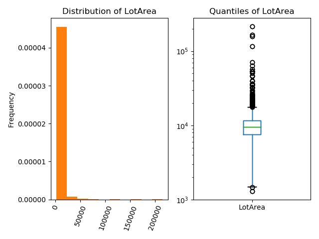

Feature Engineering¶
Up until this chapter, attributes of tables have been analyzed in an ad hoc way. All of these techniques involve transforming attributes into an easily understood form. Some examples might include:
scaling salaries to standardize the differences by job type,
choosing bins to smooth noisy time-series data,
aggregating cities into their counties to plot population data,
vector encoding into raw text using the Bag of Words model.
These examples are instances of feature engineering: the process of transforming data into understandable, useful measurements.
Features¶
Definition: A feature is a measurable property or characteristic of a phenomenon being observed. Other synonyms include attribute and (explanatory) variable.
In the context of quantitative, tabular data, features are the columns of the dataset. However, not all features are equally effective:
Definition: Feature engineering is the process of creating effective, quantitative attributes from data to effectively understand the phenomena the data represents.
What makes an effective feature depends on how the dataset is used:
The features of a dataset used for EDA and visual analysis should summarize information neatly for the human eye. The data should be evenly distributed without too many features.
A dataset used to fit a model needs features with appropriate properties for that model. Nearly all statistical models require quantitative features; individual models may have varying requirements:
Linear models require minimally correlated features that are well-approximated by a plane. Feature transformations might scale non-linear attributes to approximately-linear features.
Neural Networks work well with features scaled between 0 and 1.
The goal of feature engineering is to transformation a dataset so that ‘similar’ observations in the data are mapped to nearby points in the quantitative space of features. That is, effective feature engineering transforms a dataset into a subset of Euclidean space, while maintaining the notion of similarity in the original data. This translation allows statistical model to summarize the data in a relevant, useful way.
Definition: A feature is a function function \(\phi:{\rm DATA}\to\mathbb{R}^d\), where similar observations \(x,y\in {\rm DATA}\) have close images \(\phi(x), \phi(y)\in \mathbb{R}^d\)
Example: Predicting Home Prices¶
What is the relationship between home amenities and their sale-price? Suppose a dataset housing consists of houses (observations) and their properties (attributes):
Id |
LotArea |
LandSlope |
Neighborhood |
YearBuilt |
SaleCondition |
SalePrice |
|---|---|---|---|---|---|---|
120 |
8461 |
Gtl |
CollgCr |
2005 |
Partial |
163990 |
273 |
11764 |
Gtl |
NoRidge |
1999 |
Normal |
290000 |
1171 |
9880 |
Gtl |
Mitchel |
1977 |
Normal |
171000 |
997 |
10659 |
Mod |
NAmes |
1961 |
Normal |
136500 |
212 |
10420 |
Gtl |
Edwards |
2009 |
Normal |
186000 |
828 |
8529 |
Gtl |
SawyerW |
2001 |
Normal |
189000 |
801 |
12798 |
Sev |
ClearCr |
1997 |
Normal |
200000 |
1010 |
6000 |
Gtl |
SWISU |
1926 |
Normal |
102000 |
1246 |
12090 |
Gtl |
NWAmes |
1984 |
Abnorml |
178000 |
129 |
7590 |
Mod |
NAmes |
1966 |
Normal |
155000 |
Before attempting to formalize this investigation with a statistical model, it’s helpful to understand how each column contains useful information.
The
Idcolumn is a nominal attribute as the integers are distinct labels for each property; there is not correspondence between the label given to a home and any property of the house external to the dataset. As such, this column has no value in understanding the relationship between a home and its sales price. TheIdcolumn is an uninformative feature. Such features are best to drop from a dataset before analysis.While the
LotAreacolumn is quantitative, the existing values don’t lend themselves to explanation. The distribution of the majority of lot sizes (left) is hidden by a few houses with very large lot sizes. Focus on what the typical variation is lot sizes is better explained using a log-scaled box-plot:The box plot describes the lot sizes in percentile terms that conveys the range of typical lot size.
The log-scale is appropriate when most observations are small.

The
LandSlopecolumn describes the contour of the land on which the house is built. The possible values are: Gentle Slope (Gtl), Moderate Slope (Mod), Severe Slope (Sev). This column is an ordinal attribute with ordering given as listed. Such attributes can be encoded using the natural correspondence with the integers; this procedure is called ordinal encoding.The
Neighborhoodcolumn is a nominal attribute without an obvious ordering. Engineering a feature from theNeighborhoodcolumn involves defining a notion of similarity between neighborhoods. A number of possibilities to encode theNeighborhoodas quantitative columns are:Map a neighborhood name to the latitude/longitude of the geographical center of the neighborhood. This encodes the notion of distance on a map; neighborhoods are similar if they are nearby each other.
Map a neighborhood name to the median annual income of the population of that neighborhood. Thus, two neighborhoods are similar if their resident income profiles are similar. This encoding seems highly relevant to the problem at hand.
Feature Engineering: Ordinal Data¶
While categorical, ordinal data have an obvious notion of similarity through the ordering of the category. The obvious categorical encoding for ordinal data uses the correspondence of ordinal data with the integers.
Definition: By definition, the values A1,...,AN of an ordinal attribute have a correspondence with the integer \(1,\ldots,N\), where A1 is the ‘smallest’ value and AN is the ‘largest’ value. The ordinal encoding of the column maps each value to its corresponding integer: \(\phi(A_i) = i\). This transformation preserves the notion of similarity in the categorical values.
Example: The LandSlope attribute in the housing dataset has a natural ordering from ‘gentle’ to ‘severe’. The ordinal encoding of that column is:
Pandas code that generates the ordinal encoding looks like:
order_values = ['Gtl', 'Mod', 'Sev']
ordinal_enc = {y:x for (x,y) in enumerate(order_values)}
housing['LandSlope'].replace(ordinal_enc)
Feature Engineering: Nominal Data¶
Nominal data has no inherent notion of similarity; such attributes appear a labels given to observations. While a column may not have any obvious correspondence to the number line, that does not preclude the column from containing rich information with sophisticated notions of similarity. Usually features derived from a single nominal column lie in multiple dimension.
Engineering features out of nominal columns requires ingenuity to effectively capture notions of similarity between nominal values. Examples of this include:
Mapping neighborhoods in the housing dataset to pairs of quantitative values (latitude and longitude); similarity between neighborhood names corresponds to the geographical distance between the neighborhoods.
Mapping a text phrase to it’s Bag-of-Word embedding; similarity between vectors is proportional to the number of words two phrases have in common.
Sometimes, it’s unclear how to effectively engineer a feature from nominal data. One can always transform a nominal attribute using one-hot encoding. One-hot encoding maps the values of a nominal column to binary columns that simply measure whether a given observation is equal to a set value:
Definition: Given a column col with distinct values A1,...,AN, define the following quantitative binary columns:
The one-hot encoding of the column col is the collection of N binary columns \(\phi_1,\ldots,\phi_N\).
Remark: The resulting variables are also called dummy variables or indicator variables.
Example: The Neighborhood column contains values NAmes, CollgCr, OldTown, Edwards. The one-hot encoding creates four columns: is_NAmes, is_CollgCr, is_OldTown, is_Edwards. The transformation of the Neighborhood column looks like:
|
|
|
|
|
|---|---|---|---|---|
NAmes |
1 |
0 |
0 |
0 |
OldTown |
0 |
0 |
1 |
0 |
NAmes |
1 |
0 |
0 |
0 |
CollgCr |
0 |
1 |
0 |
0 |
Edwards |
0 |
0 |
0 |
1 |
… |
… |
… |
… |
… |
Notice that each value is equidistant from every other distinct value; this aligns with the notion that nominal attributes have no inherent notion of distance.
Pandas code that generates the one-hot encoding for the Neighborhood column looks like:
nbds = housing['Neighborhood'].unique()
housing['Neighborhood'].apply(lambda nbd: pd.Series(nbd == nbds, index=nbds, dtype=float))